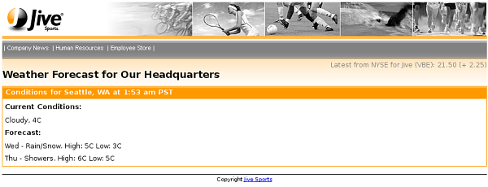

The XDIME page shown below presents weather conditions for Seattle, WA, the Jive Headquarters. The information is provided by the Yahoo! Weather service. The XSL transformation is used to filter and convert the data to XDIME.

xmlns:pipeline="http://www.volantis.com/xmlns/marlin-pipeline" xmlns:webd="http://www.volantis.com/xmlns/marlin-web-driver"
<webd:get url="http://weather.yahooapis.com/forecastrss">
<webd:parameters>
<webd:parameter name="p" value="USWA0395"/>
<webd:parameter name="u" value="c"/>
</webd:parameters>
</webd:get>
<pipeline:transform href="xsl/http2xdime.xsl">
<webd:get url="http://weather.yahooapis.com/forecastrss">
<webd:parameters>
<webd:parameter name="p" value="USWA0395"/>
<webd:parameter name="u" value="c"/>
</webd:parameters>
</webd:get>
</pipeline:transform>You may provide for alternative content in case a remote service fails for any reason.
<pipeline:try>
<pipeline:preferred>
<pipeline:transform href="xsl/http2xdime.xsl">
<webd:get url="http://weather.yahooapis.com/forecastrss">
<webd:parameters>
<webd:parameter name="p" value="USWA0395"/>
<webd:parameter name="u" value="c"/>
</webd:parameters>
</webd:get>
</pipeline:transform>
</pipeline:preferred>
<pipeline:alternative>
<pipeline:content>
<p>There was a problem retrieving the information requested.</p>
</pipeline:content>
</pipeline:alternative>
</pipeline:try>
<?xml version="1.0" encoding="UTF-8"?>
<html xmlns="http://www.w3.org/2002/06/xhtml2"
xmlns:mcs="http://www.volantis.com/xmlns/2006/01/xdime/mcs"
xmlns:urid="http://www.volantis.com/xmlns/marlin-uri-driver"
xmlns:pipeline="http://www.volantis.com/xmlns/marlin-pipeline"
xmlns:webd="http://www.volantis.com/xmlns/marlin-web-driver">
<head>
<title>Weather Forecast for Our Headquarters</title>
<!--Links to the layout and theme for this page -->
<link rel="mcs:layout" href="/jivearticle.mlyt"/>
<link rel="mcs:theme" href="/jive.mthm"/>
</head>
<!-- Page body -->
<body>
<!-- The common material for the page header -->
<urid:fetch href="jiveheader.xdinc"/>
<!-- Page Title -->
<h2 id="title">Weather Forecast for Our Headquarters</h2>
<!-- The article -->
<div id="article">
<pipeline:try>
<pipeline:preferred>
<pipeline:transform href="xsl/http2xdime.xsl">
<webd:get url="http://weather.yahooapis.com/forecastrss">
<webd:parameters>
<webd:parameter name="p" value="USWA0395"/>
<webd:parameter name="u" value="c"/>
</webd:parameters>
</webd:get>
</pipeline:transform>
</pipeline:preferred>
<pipeline:alternative>
<pipeline:content>
<p>There was a problem retrieving the information requested.</p>
</pipeline:content>
</pipeline:alternative>
</pipeline:try>
</div>
<!-- The common material for the page footer -->
<urid:fetch href="jivefooter.xdinc"/>
</body>
</html>
| Name | Purpose |
|---|---|
| a | Used to create an explicit link to another place in the same document or to another document. The current document is the source of the link and the value of the href attribute, defines the link target |
| body | Contains the document's content. |
| div | A section used to add extra structure to documents. Style sheets can be used to control the presentation. |
| h1, h2, h3, h4, h5, h6 | Heading elements for sections within a document. The number associated with each element indicates its relative position in the hierarchy of headings, with 1 indicating the top level and 6 the lowest level. |
| head | Information such as the title and other metadata that is not document content. The contained title element is required. |
| html | The container for the XDIME 2 document. |
| link | Defines a single link. Multiple links and relationships may be used in the head section of a document. |
| pipeline:alternative | Contains alternative content inside a try element. |
| pipeline:content | Allows you to specify mixed content. Pipeline markup within the element will cause a streaming error. |
| pipeline:preferred | Contains preferred content inside a try element. It must contain one or more pipeline operation elements. |
| pipeline:transform | The root element for a transform. |
| pipeline:try | Provides both preferred and alternative content if there are errors in the pipeline. |
| title | The title element is used to identify the document. It can contain only text. |
| urid:fetch | Specifies a driver URI. |
| webd:get | Represents the HTTP GET method. |
| webd:parameter | Defines an HTTP parameter. There are also element forms for some attribute values. |
| webd:parameters | Container for multiple parameter elements. |
| webd:post | Represents the HTTP POST method. |
| Core attributes | Attributes that are common to XDIME 2 elements. |